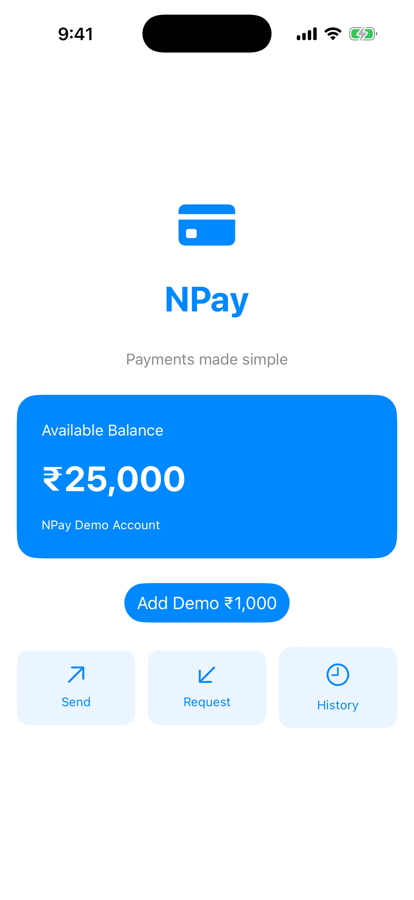
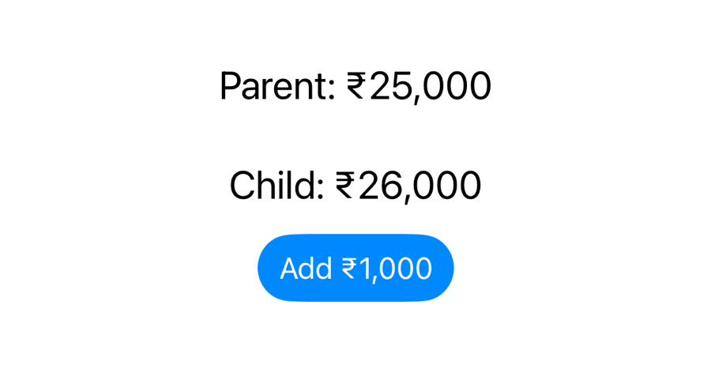
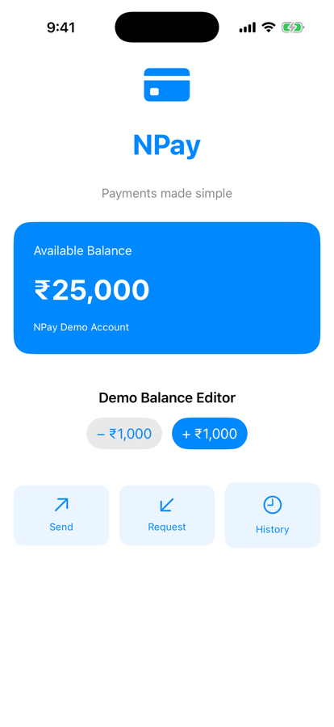

Unit 02 · Lesson 2.9
A child view needs to change a value its parent owns. Without a second copy. How?
Lesson 2.9 · Outcomes
Why passing an Int can’t change the parent
@Binding and $balance: read and write
How a binding writes through: nonmutating set
One source of truth, not two
Custom bindings: Binding(get:set:)
Value or binding: give only the access needed
Lesson 2.9 · Where we are
Unit 02 · SwiftUI Fundamentals
@State balance in ContentView; BalanceCard reads it.TodayA BalanceEditor that changes it, through a binding.Part 1
One balance, two views
Part 1 · NPay needs a balance editor (section 1)

Before: Lesson 2.8
+, +, − : ₹26,000
Part 2
A copy can’t write back
Part 2 · Why passing an Int is not enough (section 2)
struct BalanceEditor: View {
let balance: Int
var body: some View {
Button("Add ₹1,000") {
balance += 1000
}
}
}With var instead:
Both from swiftc, iOS 26.5 SDK
Int parameter is a copyPart 3
Access to someone else’s state
Part 3 · Introducing @Binding (section 3)
@Binding. Parent: $balancestruct BalanceEditor: View {
@Binding var balance: Int
var body: some View {
Button("Add ₹1,000") {
balance += 1000
}
}
}struct ContentView: View {
@State private var balance = 25000
var body: some View {
BalanceEditor(balance: $balance)
}
}Part 3 · balance versus $balance (section 4)
parent $balance: Binding<Int>
child balance: Int
child _balance: Binding<Int>
// iOS 26.5 SDK (excerpts)
@propertyWrapper public struct State<Value> {
public var projectedValue: Binding<Value> { get }
}
@propertyWrapper public struct Binding<Value> {
public var wrappedValue: Value { get nonmutating set }
}Part 4
It forwards the write
Part 4 · How does Binding work? (sections 5, 13)
nonmutating set// Teaching approximation, not Apple's implementation
struct SimpleBinding<Value> {
let get: () -> Value
let set: (Value) -> Void
var wrappedValue: Value {
get { get() }
nonmutating set { set(newValue) }
}
}
final class Storage { var balance = 25000 }
let storage = Storage()
let binding = SimpleBinding(get: { storage.balance },
set: { storage.balance = $0 })
binding.wrappedValue += 1000 // binding is a let!
print(binding.wrappedValue, storage.balance)through the binding: 26000
the storage itself: 26000
let, inside a viewPart 4 · One write, start to finish (sections 6, 13) · conceptual
BalanceCard body: 25000
BalanceEditor body: 25000
BalanceCard body: 26000
BalanceEditor body: 26000
… 27000 … 27000
… 26000 … 26000
Part 5
Not two copies
Part 5 · Why the child needs no @State of its own (section 7)
struct BalanceEditor: View { // incorrect design
@State private var balance = 25000
var body: some View {
Button("Add ₹1,000") {
balance += 1000
}
}
}child balance now 26000
parent still shows ₹25,000

Parent and child disagree
Part 6
Milestone 2.9
Part 6 · Create BalanceEditor (section 8)
struct BalanceEditor: View {
@Binding var balance: Int
var body: some View {
VStack(spacing: 12) {
Text("Demo Balance Editor")
.font(.headline)
HStack(spacing: 12) {
Button("− ₹1,000") {
balance = max(0, balance - 1000)
}
.buttonStyle(.bordered)
Button("+ ₹1,000") {
balance += 1000
}
.buttonStyle(.borderedProminent)
}
}
.padding()
}
}BalanceEditor body: 0
balance now 0
(second −: still 0, no new update)
Part 6 · Integrate and run (sections 9–10, 17)
ScrollView around the VStack
Launch: ₹25,000
+, +, −: ₹26,000
Part 7
Binding(get:set:)
Part 7 · Build a binding manually (sections 11, 14)
BalanceEditor(
balance: Binding(
get: {
balance
},
set: { newValue in
balance = newValue
}
)
)manual binding set 26000
BalanceCard body: 26000
private var safeBalance: Binding<Int> {
Binding(
get: {
balance
},
set: { newValue in
balance = max(0, newValue)
}
)
}
// BalanceEditor(balance: safeBalance)safeBalance set: asked -500, storing 0
safeBalance set: asked -1000, storing 0
$balance; UI validation ≠ financial validationPart 8
Only the access needed
Part 8 · Read-only value vs binding (sections 15–16)
struct BalanceCard: View { // reads
let balance: Int
var body: some View {
Text("₹\(balance)")
}
}
struct BalanceEditor: View { // reads and writes
@Binding var balance: Int
var body: some View {
Button("Add ₹1,000") {
balance += 1000
}
}
}balance += 1000 in the editorLesson 2.9 · Recap
$balance is a Binding
the projected value of @State
Bindings forward writes
nonmutating set; no ownership
One owner, right access
value to readers, binding to writers
Review
Check your understanding · 1 of 10
Who owns the balance in our NPay design?
ContentViewBalanceEditorContentView’s @State; the editor only has a binding to it.
Common trap: Thinking whoever writes, owns.
Check your understanding · 2 of 10
What is the type of $balance?
IntBinding<Int>State<Int>Printed in the simulator; it is State’s projectedValue.
Common trap: Confusing it with the wrapper, State.
Check your understanding · 3 of 10
Does @Binding own the underlying value?
It forwards reads and writes to storage owned elsewhere.
Common trap: Picturing a copy inside the child.
Check your understanding · 4 of 10
What happens when BalanceEditor changes balance?
Both BalanceCard and BalanceEditor re-evaluated with the same new value.
Common trap: Expecting a local change.
Check your understanding · 5 of 10
Why can @Binding work inside a SwiftUI struct?
SDK: wrappedValue { get nonmutating set }; our SimpleBinding wrote through a let.
Common trap: Thinking the struct must become mutable.
Check your understanding · 6 of 10
What is the main risk of duplicating @State in parent and child?
Child ₹26,000, parent ₹25,000 after one tap.
Common trap: Thinking SwiftUI keeps them in sync.
Check your understanding · 7 of 10
What does Binding(get:set:) provide?
safeBalance’s setter clamped −500 to 0 before storing.
Common trap: Thinking bindings are magic.
Check your understanding · 8 of 10
Should a child receive @Binding if it only displays a value?
Pass a value: give only the access needed.
Common trap: Handing out write access by default.
Check your understanding · 9 of 10
The balance is ₹500. You tap − ₹1,000 twice (it uses max(0, balance - 1000)). What does it show?
First press clamps to 0; the second stays 0.
Common trap: Forgetting the clamp.
Check your understanding · 10 of 10
From Lesson 2.8: does the @State balance survive if NPay is terminated?
@State is in-memory UI state; persistence comes later.
Common trap: Confusing “survives updates” with “saved”.
Lesson 2.9 · Where this goes next
| Lesson | Topic | Builds on today |
|---|---|---|
| 2.10 | ForEach, List & collection identity | a transaction model and NPay’s first history: Identifiable, stable IDs |
Lesson 2.9 · Lab
Predict, run, verify.
let balance, then var, in the child; read both errors.@Binding; pass $balance.@State; watch them diverge.BalanceEditor; tap +, +, −.safeBalance to a child that doesn’t clamp.balance += 1000; inspect.Lesson 2.9 complete
Next: Lesson 2.10 — ForEach, List & Collection Identity